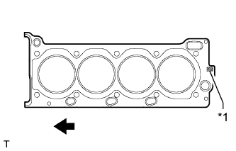
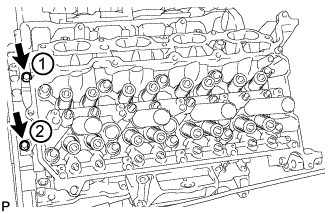
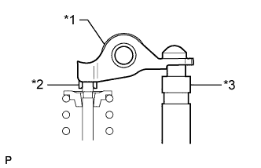

CYLINDER HEAD GASKET > INSTALLATION |
| 1. INSTALL NO. 2 CYLINDER HEAD GASKET |
|  |
Place the cylinder head gasket on the cylinder block surface with the front face of the Lot No. stamp upward.
| *1 | Lot No. |
 | Engine Front |
| 2. INSTALL CYLINDER HEAD SUB-ASSEMBLY LH |
Place the cylinder head on the cylinder block.
Install the cylinder head bolts.
Apply a light coat of engine oil to the threads and under the heads of the cylinder head bolts.
 |
Step 1:
Using a 10 mm bi-hexagon wrench, install and uniformly tighten the 10 cylinder head bolts with the plate washers in several steps in the sequence shown in the illustration.
Mark the front side of each cylinder head bolt head with paint.
Step 2:
Tighten the cylinder head bolts 90°.
Step 3:
Tighten the cylinder head bolts an additional 90°.
Check that the paint mark is now at a 180° angle to the front.
 |
Install and uniformly tighten the 2 bolts in the sequence shown in the illustration.
| 3. INSTALL CYLINDER HEAD GASKET |
 |
Place the cylinder head gasket on the cylinder block surface with the front face of the Lot No. stamp upward.
| *1 | Lot No. |
| Engine Front |
| 4. INSTALL CYLINDER HEAD SUB-ASSEMBLY |
Place the cylinder head on the cylinder block.
Install the cylinder head bolts.
Apply a light coat of engine oil to the threads and under the heads of the cylinder head bolts.
 |
Step 1:
Using a 10 mm bi-hexagon wrench, install and uniformly tighten the 10 cylinder head bolts with the plate washers in several steps in the sequence shown in the illustration.
Mark the front side of each cylinder head bolt head with paint.
Step 2:
Tighten the cylinder head bolts 90°.
Step 3:
Tighten the cylinder head bolts an additional 90°.
Check that the paint mark is now at a 180° angle to the front.
|  |
Install and uniformly tighten the 2 bolts in the sequence shown in the illustration.
| 5. INSTALL VALVE STEM CAP |
Apply a light coat of engine oil to the valve stem caps.
Install the 32 valve stem caps to the cylinder head.
| 6. INSTALL VALVE LASH ADJUSTER ASSEMBLY |
Inspect the valve lash adjusters (Click here).
Install the 32 valve lash adjusters to the cylinder head.
| 7. INSTALL NO. 1 VALVE ROCKER ARM SUB-ASSEMBLY |
Apply engine oil to the valve lash adjuster tips and valve stem cap ends.
|  |
Install the 32 No. 1 valve rocker arms as shown in the illustration.
| *1 | No. 1 Valve Rocker Arm |
| *2 | Valve Stem Cap |
| *3 | Valve Lash Adjuster |
| 8. INSTALL CAMSHAFT SUB-ASSEMBLY |
Install the camshaft sub-assemblies (Click here).
| 9. INSTALL EXHAUST MANIFOLD ASSEMBLY |
Install the exhaust manifold assembly (Click here).